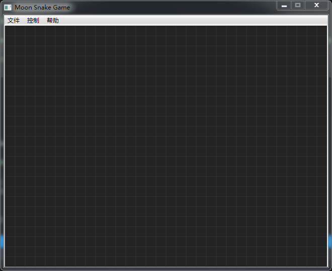

一. 游戏界面
首先，按照惯例，编辑MainWindow.xaml，先将游戏界面制作好。非常简单：
（1）主游戏区依然使用我们熟悉的Canvas控件，大小为640X480像素，设定每小格子为20px，所以横坚坐标的格子数为32x24。见源代码的最后位置。
（2）定位控件我们使用DockPanel，方便放置主菜单。
（3）将按键事件PreviewKeyDown放在Window内。
<Window x:Class="MoonSnake.MainWindow"
xmlns="http://schemas.microsoft.com/winfx/2006/xaml/presentation"
xmlns:x="http://schemas.microsoft.com/winfx/2006/xaml"
xmlns:d="http://schemas.microsoft.com/expression/blend/2008"
xmlns:mc="http://schemas.openxmlformats.org/markup-compatibility/2006"
xmlns:local="clr-namespace:MoonSnake"
mc:Ignorable="d"
PreviewKeyDown="MyCanvas_PreviewKeyDown"
Title="Moon Snake Game" Height="540" Width="660" WindowStartupLocation="CenterScreen" ResizeMode="CanMinimize">
<DockPanel>
<Menu DockPanel.Dock="Top">
<MenuItem Header="文件">
<MenuItem Name="MenuFile_NewGame" Header="新游戏" Click="MenuFile_NewGame_Click" />
<Separator/>
<MenuItem Name="MenuFile_Exit" Header="退出" Click="MenuFile_Exit_Click" />
</MenuItem>
<MenuItem Header="控制">
<MenuItem Name="MenuControl_Pause" Header="暂停" Click="MenuControl_Pause_Click" />
</MenuItem>
<MenuItem Header="帮助">
<MenuItem Name="MenuHelp_About" Header="关于..." Click="MenuHelp_About_Click" />
</MenuItem>
</Menu>
<Canvas x:Name="myCanvas" Height="480" Width="640" Background="#222222" Focusable="True"
PreviewKeyDown="MyCanvas_PreviewKeyDown" />
</DockPanel>
</Window>
二、添加水果Fruit类
因为我们不打算使用任何图片，所以为了简单起见，就只使用红色的实心圆代表水果好了。
看下面的代码：功能简单，主要通过两个属性指定水果的位置和图形。
public class Fruit
{
public Point _pos { get; set; }
public Ellipse _ellipse { get; set; }
public Canvas _canvas { get; set; }
public Fruit(Point point, Canvas canvas)
{
_pos = point;
_canvas = canvas;
_ellipse = new Ellipse
{
Width = 20,
Height = 20,
Fill = Brushes.Red
};
_ellipse.SetValue(Canvas.LeftProperty, _pos.X * 20);
_ellipse.SetValue(Canvas.TopProperty, _pos.Y * 20);
_canvas.Children.Add(_ellipse);
}
public void SetPostion(Point pos)
{
_pos = pos;
_ellipse.SetValue(Canvas.LeftProperty, _pos.X * 20);
_ellipse.SetValue(Canvas.TopProperty, _pos.Y * 20);
}
}
三、添加单节蛇身SnakeNode类
每个SnakeNode代表蛇身的一节，之后我们会通过List<SnakeNode>列表代表整条蛇。
看代码就知道了，与水果类非常相似，甚至比它更简单，构造函数没有传递Canvas参数，因为我们打算在主程序实现添加图形到主游戏区的功能，只要指定它的位置和形状即可，形状则使用了有边线的矩形代替。
public class SnakeNode
{
public Point _pos { get; set; }
public Rectangle _rect { get; set; }
public SnakeNode(Point point)
{
_pos = point;
_rect = new Rectangle
{
Width = 20,
Height = 20,
Stroke = new SolidColorBrush(Colors.DodgerBlue),
StrokeThickness = 3,
Fill = Brushes.SkyBlue
};
_rect.SetValue(Canvas.LeftProperty, _pos.X * 20);
_rect.SetValue(Canvas.TopProperty, _pos.Y * 20);
}
}
四、定义四个常量和两个枚举
看注释：
const int CellSize = 20; // 小格子大小
const int SnakeHead = 0; // 蛇头位置（永远位于列表0）
const int CellWidth = 640 / CellSize; // 游戏区横格数
const int CellHeight = 480 / CellSize; // 游戏区纵格数
// 蛇身前进方向
enum Direction
{
UP,
DOWN,
LEFT,
RIGHT
}
Direction Direct = Direction.UP;
// 游戏状态
enum GameState
{
NONE,
GAMEING,
PAUSE,
STOP
}
GameState CurrGameState = GameState.NONE;
五、很少的几个字段变量
List<SnakeNode> SnakeNodes = new List<SnakeNode>(); // 蛇身列表
Fruit fruit; // 水果
Random rnd = new Random((int)DateTime.Now.Ticks); // 随机数
System.Windows.Threading.DispatcherTimer timer = new System.Windows.Threading.DispatcherTimer(); // 计时器
六、画游戏区暗格线
主要使用Path控件，通过循环每隔20px画一根横线和纵线。
private void DrawGrid()
{
Path gridPath = new Path();
gridPath.Stroke = new SolidColorBrush(Color.FromArgb(255, 50, 50, 50));
gridPath.StrokeThickness = 1;
StringBuilder data = new StringBuilder();
for (int x = 0; x < 640; x += CellSize)
{
data.Append($"M{x},0 L{x},480 ");
}
for (int y = 0; y<480; y += CellSize)
{
data.Append($"M0,{y} L640,{y} ");
}
gridPath.Data = Geometry.Parse(data.ToString());
myCanvas.Children.Add(gridPath);
}
七、我是构造方法
这里画底线和设置计时器。
public MainWindow()
{
InitializeComponent();
DrawGrid();
timer.Interval = new TimeSpan(0, 0, 0, 0, 260);
timer.Tick += Timer_Tick;
}可先注释掉最后一行，运行看看游戏界面了。
